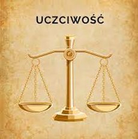
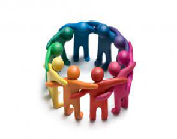
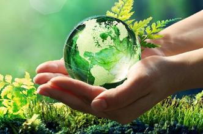
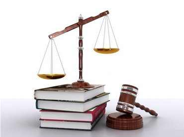
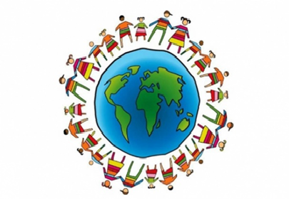
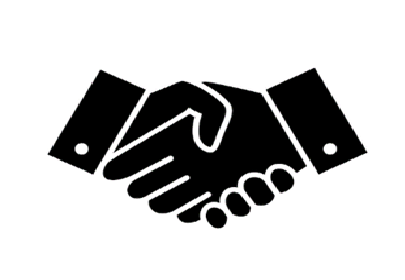

Odnosi się do sposobu, w jaki podejmujemy decyzje, kierujemy naszym postępowaniem i integrujemy z innymi ludźmi w kontekście moralnym. Dotyczy ona naszych wartości, norm, zasad i przekonań, które wpływają na nasze codzienne wybory i działania.
Etyka w życiu codziennym pomaga nam rozważać, co jest dobre, sprawiedliwe i właściwe, oraz jakie są nasze odpowiedzialności względem innych osób i społeczności, w których funkcjonujemy. Obejmuje to szacunek dla innych, uczciwość, empatię, odpowiedzialność społeczną, sprawiedliwość społeczną, troskę o środowisko naturalne i wiele innych aspektów, które wpływają na jakość naszego życia i relacji z innymi.
Etyka w życiu codziennym pomaga nam podejmować moralnie odpowiednie decyzje i działać zgodnie z naszymi wartościami, nawet w sytuacjach trudnych czy konfliktowych. Pomaga nam również rozumieć konsekwencje naszych działań dla innych ludzi i środowiska, oraz rozwijać naszą moralność poprzez refleksję i samodoskonalenie.
Warto podkreślić, że etyka w życiu codziennym nie jest czymś statycznym, ale raczej dynamicznym procesem, który wymaga ciągłego rozważania, nauki i dostosowywania naszych postaw i działań. Jest to nieodłączna część naszego codziennego życia i wpływa na nasze relacje, decyzje konsumenckie, działania społeczne, jak również na nasze samopoczucie i poczucie własnej wartości.
1) Szacunek wobec innych osób:
a) Jak możemy wyrażać szacunek wobec innych osób w naszych codziennych interakcjach?
Poprzez słuchanie ich opinii i szanowanie ich poglądów.
Przejawiając uprzejmość i życzliwość w naszych interakcjach.
Dając innym przestrzeń do wyrażania swoich emocji i potrzeb.
Unikając osądów i dyskryminacji.
Etyka w życiu codziennym
1) Szacunek wobec innych osób:
a) Jak możemy wyrażać szacunek wobec innych osób w naszych codziennych interakcjach?
Szacunek jest fundamentem zdrowych relacji międzyludzkich.
Wpływa na naszą zdolność do współpracy, empatii i zrozumienia.
Przyczynia się do tworzenia harmonijnego i sprawiedliwego społeczeństwa.
Promuje wzajemne wsparcie i poczucie godności u innych osób.

2) Uczciwość i prawdomówność:
a) Jakie znaczenie ma uczciwość i prawdomówność w naszych relacjach z innymi ludźmi?
Buduje zaufanie i autentyczność w naszych relacjach.
Ułatwia skuteczną komunikację i rozwiązywanie problemów.
Chroni nas przed manipulacją i oszustwem.
Wzmacnia naszą integrowość moralną i samopoczucie.
b) Dlaczego uczciwość jest kluczowym elementem etycznego postępowania w codziennym życiu?
Uczciwość jest podstawą moralności i dbałości o dobro wspólne.
Pozytywnie wpływa na nasze relacje interpersonalne i społeczne.
Sprzyja tworzeniu uczciwego i sprawiedliwego społeczeństwa.
Kształtuje naszą tożsamość moralną i wpływa na nasze samopoczucie.

3) Odpowiedzialność społeczna:
a) W jaki sposób możemy przejawiać odpowiedzialność społeczną w naszym otoczeniu?
Angażując się w działania społeczne i wolontariat.
Podejmując inicjatywy na rzecz poprawy warunków życia innych osób.
Szacunek dla innych osób:
a) Dlaczego szacunek dla innych osób jest ważnym aspektem etycznego postępowania?
Szacunek dla innych osób jest wyrazem wartościowania ich godności i praw.
Szacunek tworzy harmonijne relacje i wzmacnia więzi społeczne.
Szacunek promuje uczciwość, empatię i wzajemne zrozumienie.
Szacunek jest podstawową zasadą współżycia społecznego i budowania wspólnoty.
b) Jak możemy przejawiać szacunek dla innych osób w praktyce?
Przez słuchanie i docenianie opinii i doświadczeń innych osób.
Unikanie obraźliwego języka i zachowań.
Przyjmowanie perspektywy innych osób i wykazywanie empatii.
Wspieranie równości i tolerancji dla różnych grup społecznych.
Uczciwość:
a) Dlaczego uczciwość jest ważnym elementem naszego postępowania?
Uczciwość buduje zaufanie i wiarygodność.
Uczciwość jest fundamentem sprawiedliwych relacji i społeczeństwa.
Uczciwość przyczynia się do uczynienia właściwych wyborów.
Uczciwość wymaga poszanowania norm moralnych i praw.
b) Jak możemy przejawiać uczciwość w naszym życiu codziennym?
Bycie szczerym i wiarygodnym w naszych relacjach z innymi.
Unikanie kłamstwa, oszustwa i manipulacji.
Przestrzeganie zobowiązań i dotrzymanie obietnic.
Działanie zgodnie z zasadami etycznymi, nawet jeśli nikt nas nie obserwuje.
Odpowiedzialność społeczna:
a) Dlaczego ważne jest, aby angażować się w społeczność lokalną i podejmować działania na jej rzecz?
Społeczność lokalna jest naszym wspólnym środowiskiem życia i środowiska jest nieodłączną częścią naszego moralnego obowiązku.
b) Jak możemy przejawiać odpowiedzialność społeczną w praktyce?
Angażując się w wolontariat i działania charytatywne.
Dbając o środowisko naturalne i podejmując działania proekologiczne.
Wspierając lokalne przedsiębiorstwa i społeczności lokalne.
Uczestnicząc w inicjatywach społecznych i projektach mających na celu poprawę jakości życia społeczności.
Etyczne postępowanie
3) Odpowiedzialność społeczna:
a) W jaki sposób możemy przejawiać odpowiedzialność społeczną w naszym otoczeniu?
i) Angażując się w działania społeczne i wolontariat.
ii) Podejmując inicjatywy na rzecz poprawy warunków życia innych osób.
iii) Świadomie wybierając produkty i usługi, które respektują prawa człowieka i środowisko.
iv) Wspierając lokalne społeczności i organizacje non-profit.
b) Dlaczego ważne jest, aby angażować się w społeczność lokalną i podejmować działania na jej rzecz?
i) Społeczność lokalna jest naszym wspólnym środowiskiem życia.
ii) Nasza odpowiedzialność względem innych ludzi wymaga troski o ich dobro.
iii) Angażowanie się w społeczność sprzyja tworzeniu więzi społecznych i budowaniu silniejszego społeczeństwa.
iv) Przejawianie odpowiedzialności społecznej daje nam poczucie sensu i przynależności.

4) Troska o środowisko naturalne:
a) Jakie konkretne kroki możemy podjąć, aby chronić i troszczyć się o nasze środowisko naturalne?
i) Ograniczanie zużycia energii i wody w naszych domach.
ii) Recykling i utylizacja odpadów w sposób odpowiedzialny.
iii) Ograniczanie emisji szkodliwych substancji i wybieranie ekologicznych alternatyw.
iv) Promowanie świadomego konsumpcjonizmu i minimalizowanie marnotrawstwa.
b) Dlaczego troska o środowisko jest istotnym aspektem etycznego postępowania w życiu codziennym?
i) Nasze działania mają wpływ na zdrowie i przyszłość planety.
ii) Szanowanie środowiska naturalnego jest wyrazem szacunku dla innych istot i przyszłych pokoleń.
5) Integryt i uczciwość:
a) Dlaczego integryt i uczciwość są ważne w etycznym postępowaniu?
i) Integryt i uczciwość są fundamentem zaufania w relacjach międzyludzkich.
ii) Utrzymywanie wysokich standardów moralnych pomaga nam podejmować słuszne decyzje.
iii) Integryt i uczciwość przyczyniają się do budowania pozytywnego wizerunku i reputacji.
iv) Przejawianie integrytu i uczciwości wpływa na nasze poczucie własnej wartości.
b) W jakich sytuacjach szczególnie ważne jest zachowanie integrytu i uczciwości?
i) Podczas podejmowania trudnych decyzji moralnych, gdy jesteśmy kuszeni łatwym rozwiązaniem.
ii) W relacjach biznesowych, aby zapewnić uczciwość w transakcjach i uniknąć oszustw.
iii) W sytuacjach, gdy nasze działania mają wpływ na życie innych ludzi.
iv) Podczas konfrontacji z sytuacjami, w których występuje nacisk na złamanie zasad etycznych.

5) Sprawiedliwość społeczna:
a) Jak możemy przyczynić się do zapewnienia sprawiedliwości społecznej i równości szans dla wszystkich?
i) Dążyć do eliminacji uprzedzeń i dyskryminacji ze względu na rasę, płeć, orientację seksualną, itp.
ii) Angażować się w działania na rzecz eliminacji nierówności społecznych i walki z ubóstwem.
iii) Promować równy dostęp do edukacji, opieki zdrowotnej i innych podstawowych potrzeb.
iv) Wykorzystywać swoje przywileje i wpływy w celu wspierania sprawiedliwości społecznej.
6) Moralne wybory konsumenckie:
a) Jakie czynniki powinniśmy brać pod uwagę, podejmując moralne wybory jako konsumenci?
i) Etyczne standardy i praktyki producentów i dostawców.
ii) Wpływ produktu na środowisko naturalne i dobro zwierząt.
iii) Warunki pracy i sprawiedliwość społeczna w łańcuchu dostaw.
iv) Zgodność z zasadami uczciwego handlu i sprawiedliwego wynagrodzenia.

7) Prawa człowieka:
a) Dlaczego szanowanie praw człowieka jest istotne i jak możemy działać na rzecz ich ochrony?
i) Prawa człowieka zapewniają godność, wolność i równość dla każdej osoby.
ii) Możemy działać na rzecz ochrony praw człowieka poprzez edukację i świadomość.
iii) Wspieranie organizacji i kampanii na rzecz praw człowieka.
iv) Zwracanie uwagi na przypadki łamania praw człowieka i podejmowanie działań mających na celu ich zapobieganie.
8) Postawa wobec przemocy i agresji:
a) Jakie są nasze reakcje na sytuacje konfliktowe i czy podejmujemy wysiłki w celu rozwiązywania sporów w sposób pokojowy?
i) Promowanie dialogu, empatii i negocjacji jako sposobów rozwiązywania konfliktów.
ii) Odrzucanie przemocy fizycznej, werbalnej i emocjonalnej jako sposobu rozwiązywania sporów.
iii) Szukanie rozwiązań kompromisowych i poszukiwanie win-win.

9) Lojalność i zaufanie:
a) Jakie znaczenie ma lojalność w naszych relacjach z innymi osobami i czy budujemy zaufanie przez nasze działania?
i) Lojalność jest wyrazem oddania, wierności i wzajemnego wsparcia.
ii) Budowanie zaufania wymaga konsekwencji, uczciwości i szacunku w naszych działaniach.
iii) Lojalność przyczynia się do tworzenia głębokich i trwałych więzi międzyludzkich.
iv) Zaufanie jest fundamentem zdrowych relacji, a nasze działania wpływają na poziom zaufania, który budujemy.
10) Samorozwój moralny:
a) Jak możemy rozwijać naszą moralność i dążyć do bycia lepszymi osobami pod względem etycznym?
i) Podejmowanie refleksji nad naszymi wartościami i przekonaniami.
ii) Edukacja w zakresie etyki i moralności.
iii) Praktykowanie empatii i rozważanie konsekwencji naszych działań.
iv) Samokrytyczne ocenianie naszego postępowania i dążenie do doskonalenia się.
W ramach tego projektu zgłębiliśmy różne aspekty etyki w życiu codziennym i ich znaczenie dla nas samych i społeczności, w których funkcjonujemy. Rozważaliśmy ważne zagadnienia, takie jak szacunek wobec innych osób, uczciwość, odpowiedzialność społeczna, troska o środowisko naturalne, sprawiedliwość społeczna, moralne wybory konsumenckie, prawa człowieka, postawa wobec przemocy i agresji, lojalność i zaufanie oraz samorozwój moralny.
Przeanalizowaliśmy pytania dotyczące tych zagadnień i zdobyliśmy wiedzę na temat sposobów, w jakie możemy integrować etyczne wartości w nasze codzienne życie. Odpowiedzieliśmy na pytania dotyczące znaczenia tych wartości, jak wpływają na naszą jakość życia i jak możemy je przejawiać w praktyce.
Jestem przekonany, że świadome dążenie do postępowania etycznego w naszych codziennych wyborach ma kluczowe znaczenie dla naszej własnej integralności moralnej i dla tworzenia lepszego i bardziej sprawiedliwego społeczeństwa. Wzmacnianie naszej świadomości etycznej, podejmowanie odpowiedzialnych decyzji i przestrzeganie wartości etycznych stanowią fundament naszego postępowania.
Projekt ten ma na celu inspirację i zachęcenie do refleksji nad naszymi wartościami i działaniami w kontekście etyki. Pamiętajmy, że każdy z nas ma moc wpływu na świat wokół nas poprzez nasze wybory i postępowanie. Wprowadzanie pozytywnych zmian etycznych zaczyna się od nas samych.
Dziękuję za udział w tym projekcie i mam nadzieję, że zdobyta wiedza pomoże nam wszystkim budować bardziej etyczne społeczeństwo i przyczyni się do naszego osobistego rozwoju. Pamiętajmy, że etyka nie jest jednorazowym wysiłkiem, ale ciągłym procesem, który wymaga świadomego działania i stałego doskonalenia.
Razem możemy uczynić świat lepszym miejscem poprzez codzienne wybory, które odzwierciedlają nasze najwyższe wartości etyczne.
Zapraszamy Cię do udziału w naszym quizie o etyce! To doskonała okazja, aby sprawdzić swoje rozumienie kluczowych zagadnień etycznych i wyzwań, z jakimi spotykamy się w życiu codziennym.
Nasz quiz składa się z różnorodnych pytań, które obejmują tematy takie jak szacunek, uczciwość, odpowiedzialność społeczna, troska o środowisko, sprawiedliwość społeczna, moralne wybory konsumenckie, prawa człowieka, postawa wobec przemocy, lojalność i zaufanie oraz samorozwój moralny.
Przygotuj się na rozbudzenie swojej świadomości etycznej i odkrywanie nowych perspektyw. Aby wziąć udział w quizie, kliknij poniższy przycisk "Quiz". Będziesz automatycznie przeniesiony na stronę z quizem, gdzie będziesz mógł rozpocząć testowanie swojej wiedzy na temat etyki. Powodzenia!